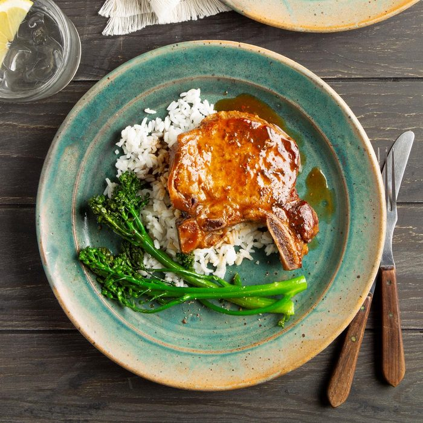

Pork Chops

Description
Tender chops in a delicious sauce are great over noodles or thin spaghetti.
Ingredients
- 1 tablespoon vegetable oil
- 4 (3/4 inch-thick) boneless pork chops, trimmed
- 1 clove garlic, minced
- ¼ cup beef broth
- ¼ cup soy sauce
- 2 tablespoons brown sugar
- 2 teaspoons vegetable oil
- ¼ teaspoon red pepper flakes
- 2 teaspoons cornstarch
- 2 tablespoons water
Steps
- 1 tablespoon vegetable oil in a skillet over medium heat. Brown chops in hot oil, about 5 minutes per side; remove pork to a plate, reserving oil in skillet.
- Cook and stir garlic in reserved drippings until fragrant, about 1 minute. Whisk beef broth, soy sauce, brown sugar, 2 teaspoons vegetable oil, and red pepper flakes in a bowl, dissolving brown sugar. Return pork chops to skillet and pour soy sauce mixture over the chops. Bring sauce to a boil, cover skillet, and reduce heat to low. Simmer chops until tender, 30 to 35 minutes, turning once halfway through cooking.
- Transfer chops to a serving platter. Whisk cornstarch and water in a small bowl until smooth; stir into pan juices and simmer until thickened, about 5 minutes. Pour sauce over chops to serve.